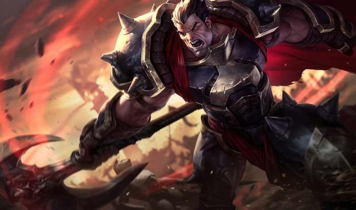

Top lane is often considered to be the coolest lane in the game. For many complex reasons, top lane is considered to be an island, where the two top laners on each team will hardly ever see the rest of the members of their own team. Top laners are also normally melee characters that like to fight each other up close and personal, making the experience similar to a boxing match.
Sett (above) and Darius (Below) are 2 of the most popular toplaners because of their asthetics and flashy playstyle
To see a list of all top laners, click Here